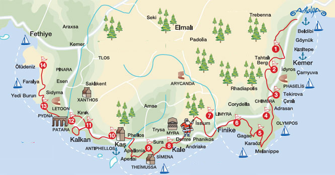

Ликийская тропа – это один из популярнейших маршрутов для пеших путешествий в Турции. Проходит она по западной части Ликийского полуострова (современный Теке), по Таврским горам и у их подножий, по колоритным городкам и посёлкам. На данный момент общая протяженность тропы составляет порядка 540 км.
Маршрут сочетает в себе, как минимум, две туристические прелести: невероятной красоты панорамы природы и памятники древних культур. Добавьте к этому аутентичность обычаев и искреннее гостеприимство местных жителей, возможность купаться на диких пляжах и лакомиться фруктами прямо с деревьев – и получите невероятный микст экзотики в исконно турецком прочтении.
Всю Ликийскую тропу можно разделить на три части: западная, центральная и восточная. Маршрут проходит вдоль моря, дважды немного углубляясь в горы. По всему пути развешены красно-белые маркеры, не позволяющие сбиться с пути. Так что вы точно не потеряетесь.
Чтоб пройти всю тропу от начала до конца может потребоваться несколько месяцев, но вы точно получите незабываемые впечатления!
Бронировать